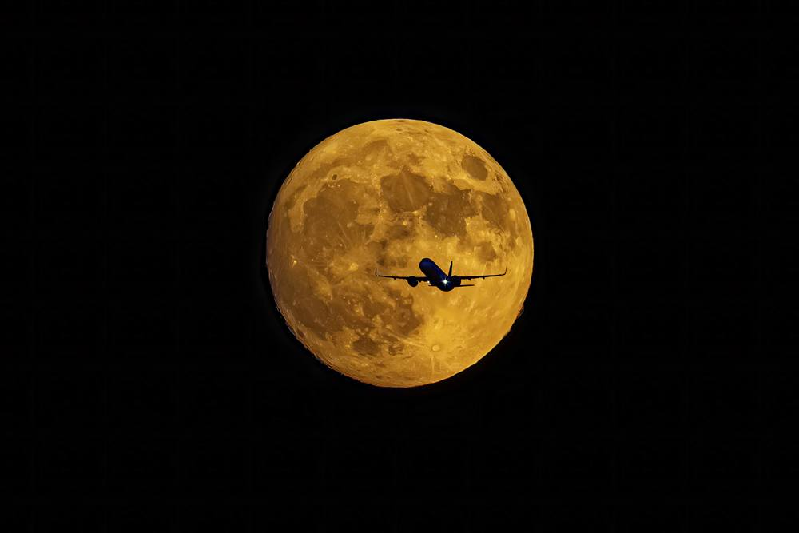
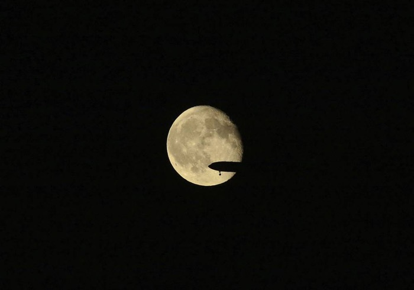
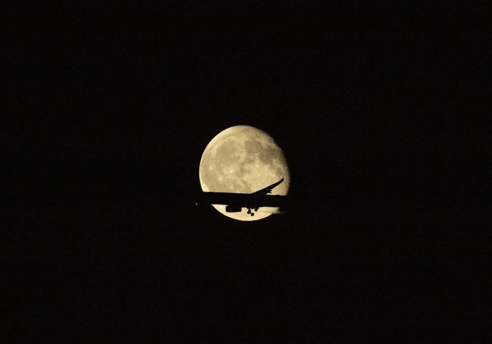
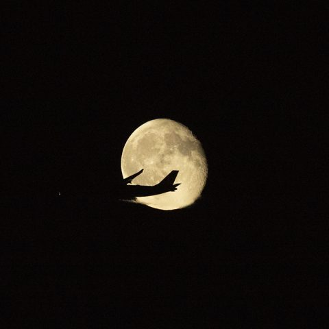
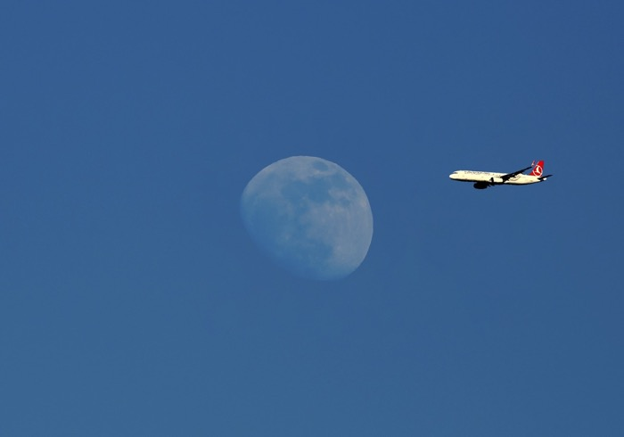
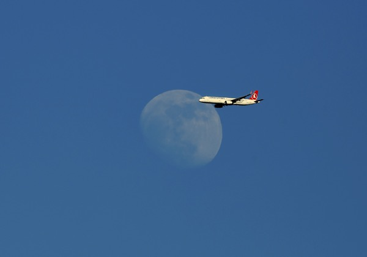
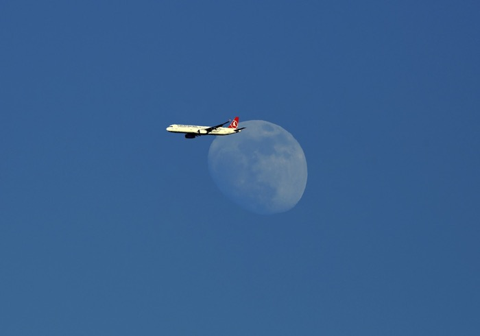

Fotoğraf
Ara Hâl / Ara Zaman
Ara Hâl / Ara Zaman, çağdaş insanın doğa, teknoloji ve medeniyet arasında giderek kalıcı hâle gelen varoluşsal eşik durumunu ele alan bir sergi projesidir. Sergi, modern bireyin artık ne bütünüyle doğaya ait olabildiği ne de inşa ettiği sistemler içinde tam anlamıyla huzurlu bir konum bulabildiği bir döneme odaklanır.
Günümüz dünyasında aidiyetler, sınırlar ve anlamlar çözülmekte; zaman doğrusal bir ilerleme hattı olmaktan çıkarak üst üste binen, yoğunlaşan ve çatışan katmanlar hâlinde deneyimlenmektedir. Ara Hâl / Ara Zaman, bu belirsizlik alanını geçici bir kriz olarak değil, çağdaş varoluşun süreklilik kazanmış bir durumu olarak ele alır.
Sergide doğa romantize edilmez; medeniyet de mutlak bir ilerleme fikriyle yüceltilmez. Yosun tutmuş bir ağaç gövdesi ile bir havaalanı altyapısı, aynı anlatının eşit parçaları olarak yan yana gelir. İnsan, bu anlatıda hem tahrip eden hem de onarmaya çalışan çelişkili bir özne olarak görünürlük kazanır.
İnsan figürü serginin merkezinde yer almaz; ara bir konumda, sessiz bir tanık olarak var olur. Yaşlı bir yüz, bir işçi bedeni ya da bir izleyici silueti, yargılayıcı olmayan bir bakışla kaydedilir. Sergi, izleyiciyi suçlamaya değil; görmeye, düşünmeye ve duraksamaya davet eder.
Ara Hâl / Ara Zaman, bir çözüm ya da gelecek vaadi sunmaz. Bu sergi, izleyiciye cevaplar vermekten çok, çağımızın kırılganlıkları üzerine düşünmek için bir alan açmayı amaçlar.
Sergi, fotoğraf pratiği aracılığıyla kişisel hafızadan süzülen imgeleri, zaman ve mekân sınırlarını aşan ortak bir anlatıda buluşturur. Fotoğraf, burada yalnızca belgeleyici bir araç değil; bakma, kaydetme ve tanıklık etme sorumluluğunu üstlenen düşünsel bir pratik olarak ele alınır.







“Eşik: İki Dünya Arası – Ara Hâl / Ara Zaman” sergisi, sanat, iş dünyası, havacılık ve medya çevrelerinden çok sayıda davetliyi bir araya getirdi. Ziyaretçiler, Güntay Şimşek’in yıllara yayılan seyahatlerinden ve gözlemlerinden süzülen fotoğrafların yalnızca estetik birer görüntü olmadığını; her birinin ardında bir hikâye, bir tanıklık ve güçlü bir anlatım barındırdığını vurguladı. Katılımcılar, Şimşek’in havacılık alanındaki deneyimini fotoğraf sanatındaki bakış açısıyla birleştirerek farklı kültürleri, insanı, doğayı ve zamanı etkileyici bir dille yorumladığını ifade etti. Özellikle havacılık temalı kareler, ağaçlar serisi, portreler ve insan hikâyelerine odaklanan çalışmalar ziyaretçiler üzerinde derin izler bıraktı. Sanatçılar, yöneticiler ve sektör temsilcileri tarafından yapılan değerlendirmelerde; fotoğrafların ‘görmek ile bakmak arasındaki farkı’ ortaya koyduğu, izleyiciyi düşünmeye sevk ettiği ve sergi adında vurgulanan ‘eşik’ kavramını başarıyla yansıttığı ortak görüş olarak öne çıktı.
"Sergide çok güzel fotoğraflar yer alıyor ve her birinin arkasında yaşanmış bir hikâye bulunuyor. Bunlar adeta tarihe düşülmüş notlar. Aynı zamanda dostumuzun bu özel gününde ona eşlik etmek için açılışa geldik. Kendisine başarılar diliyorum."
Davut Gülİstanbul Valisi
"Ben sergiyi inanılmaz beğendim. Güntay Bey'in havacılık alanındaki tecrübesi ve dünyayı gezerek her yerden bir anı, bir hatıra bırakması bence çok güzel ve çok özel. Çok analiz ettiğini ve işinden keyif aldığını biliyorum ama serginin beni bu kadar etkileyeceğini açıkçası beklemiyordum. Olaylara bizim için çok farklı bir pencereden bakıyor. En beğendiğim eser, bizim uçağımızın ayın üzerinde çekilmiş fotoğrafı oldu. Favorim o. Çarpıcı olan sadece gittiği yerler değil; oradaki anı ve hikâyeyi de yakalaması gerçekten takdire şayan. Yaptığı bütün güzel işlere bir de sanatını eklemesi bizi çok mutlu etti."
Ayşem SargınBoeing Türkiye Genel Müdürü ve Ülke Temsilcisi
"Güntay Bey ile uzun süredir tanışıyoruz ancak sanatçı ve fotoğrafçı kimliğiyle tanışmamız yeni oldu. Dünyanın dört bir yanını gezmiş olmasının ve havacılık camiasında çok önemli bir temsilci olmasının elbette avantajları var. Ancak gördüğümüz kadarıyla doğuştan gelen bir fotoğraf yeteneğine de sahip. Farklı kültürleri ve renkleri yansıtan, çok etkileyici bir sergi olmuş. Herkesin gelip görmesini tavsiye ederim."
Selahattin BilgenİGA İstanbul Havalimanı CEO'su
"Sergiyi gezerken hatıralarımız canlandı. Güntay Bey'le çok sayıda açılışa birlikte katıldık. Kendisi havacılık alanında önemli yazarlarımızdan biri. Fotoğraflar oldukça etkileyici. Türk Hava Yolları uçaklarının sergide yer alması beni ayrıca sevindirdi. Sergilerinin devamını bekliyoruz."
Hamdi TopçuEski THY Yönetim Kurulu Başkanı
"Güntay Bey her zamanki gibi sektörü bir araya getiren önemli bir etken oldu. Onun perspektifinden, kendi fotoğraf makinesinden yansıyan karelerin çok değerli ve anlamlı olduğunu düşünüyorum. Özellikle girişteki uçuş, pervane ve insan temalı fotoğraflar beni çok etkiledi."
Kerem MaybekSabiha Gökçen Havalimanı Ticari İşler ve Strateji Genel Müdür Yardımcısı
"Sergiyi gezerken Güntay Bey'in yeni bir yönünü keşfettiğimi fark ettim. Fotoğrafların çok iyi yakalandığını ve anlamlı olduğunu düşünüyorum. Eserlerde doğa, hava ve insan unsurları bir arada. Profesyonelce ortaya konmuş bu çalışmalar için kendisini tebrik ediyorum."
Okan ÜreksoyTürkiye Pilotlar Hava Yolu Derneği Başkanı
"Sergiyle ilgili değerlendirme yapmadan önce şunu söylemeliyim: Güntay Bey benim dostumdur ve havacılık sektörünün duayen isimlerinden biridir. Bu tecrübenin fotoğrafçılık kabiliyetiyle birleşmesiyle gerçekten inanılmaz eserler ortaya çıkmış. Fotoğraflar insanın dikkatini çekiyor ve tekrar tekrar bakmak istiyorsunuz. Çok güçlü bir fotoğraf gözü olduğuna inanıyorum. Yağmurlu ve zor bir günde gelmemize rağmen katılımın oldukça yüksek olması da ayrıca mutluluk vericiydi. Habercilikteki başarısının yanında fotoğrafçılık alanında da ne kadar yetkin olduğunu bizlere göstermiş oldu. Özellikle ağaç temalı fotoğraflar çok hoşuma gitti. Kendisine, bundan sonra da nice böyle sergiler gerçekleştirmesini en içten dileklerimle temenni ediyorum."
Osman OkyayKale Grubu Başkan Vekili
"Sergiyi hayranlıkla gezdim. Kendisini uzun yıllardır tanıyorum; bu kadar inceliğini, derinliğini ve ustalığını bizden sakladığı için kendisine kızgınım. Bir sanatçı olarak söylüyorum: Müthiş bir sergi ve çok iyi sergilenmiş. Uçaklar, memleketler, portreler… Öğretici bir sergi olduğunu düşünüyorum."
Rafi PortakalPortakal Sanat ve Kültürevi Kurucusu
"Güntay Bey'in ‘Eşik; İki Dünya Arası – Ara Hâl / Ara Zaman’ adlı fotoğraf sergisini ziyaret edip eserleri görme fırsatımız oldu. Havacılık alanındaki bilgi, birikim ve tecrübesini fotoğraflara da başarıyla aktardığını gördük. Gayet güzel bir sergi."
Faruk KacırHEAŞ Genel Müdürü
Sevgili Güntay Şimşek'in açtığı “Eşik: İki Dünya Arası – Ara Hâl / Ara Zaman” sergisinin açılışına gidemedim ama fotoğraflarını inceleme şansım oldu.
Gazeteciliğin yanı sıra televizyon programcısı olarak da saygı duyduğum Güntay Şimşek, fotoğraflarıyla gazeteciliği, teknolojiyi ve sanatsal bakışı bir araya getirmeyi başarmış.
Sergi adını fazlasıyla hak ediyor. Her fotoğraf bizi zamanın, yaşamın ve hızın eşiğinde tutuyor.
Ulusal ve uluslararası ölçekte özel bir yetenek gerektiren havacılık fotoğraflarını çekmeyi başardığı gibi, farklı çekim planları ve bakış açılarıyla gezip gördüğüm yerlere başka bir gözle bakmamı sağladığı için kendisine teşekkür ediyorum.
Doğal hayatı tüm çıplaklığıyla aktarırken, modern dünyamızın doğal hayata etkilerini de göstermeyi başarması, hayatın ikilemini gözler önüne seriyor. Modernleştirdiğimizi sandığımız, ancak yalnızca bize ait olmayan bir dünyada bir devekuşunun asfalt yolda yürüyüşü, insan eylemlerimizin sonuçlarını adeta tek bir karede özetliyor.
Beni en çok etkileyenlerin başında ise ağaçlar serisi geliyor diyebilirim. Grafik ve ışık kullanımı kadar bu fotoğrafların taşıdığı mesaj da dikkat çekici.
Güntay Şimşek bu fotoğraflarıyla görmek ile bakmak arasındaki farkı ortaya koyuyor. Nazım Hikmet'in ustası Abidin Dino'ya sorduğu o meşhur “Mutluluğun resmini yapabilir misin Abidin?” sorusunun cevabını, çektiği portrelerde yakalayan Güntay Şimşek'i tebrik ediyorum.
Ellerine, gözlerine, yüreğine sağlık kardeşim.
Güntay Şimşek'i gazete çizerliği dönemlerinden, oda komşum olarak tanıdım. Türkülerimiz, hikâyelerimiz ve kıymetli seslerimiz üzerine konuşarak başlayan muhabbetimiz; onun yıllar içinde biriktirdiği Türkiye'nin uçaklarla olan tarihsel hikâyesine, Nuri Demirağ'a ve Vecihi Hürkuş'a uzanırdı.
Güntay Şimşek, yıllardır havacılığı, teknolojinin dönüşümünü televizyon ekranlarından ve gazete sayfalarından bizlere aktaran bir isim. O, pistlerin ritmini bilen; motor seslerini yalnızca duyan değil, anlamlandıran bir anlatıcıdır.
Mimar Sinan Güzel Sanatlar Üniversitesi'nde resim eğitimi almış olmamın etkisiyle sanat, estetik, mimari ve kentleşme üzerine de çok konuştuk. Fakat bütün bu sohbetlerde, kendisinin bir başka yönü olan fotoğrafçılığından bir kez olsun söz etmedi.
Bir gün aradı ve fotoğraf sergisine davet etti. “Senin görüşlerin benim için değerli” deyince, görmezden gelemezdim. Serginin yolunu tuttum.
Türk fotoğrafının güçlü isimlerinden, yakın dostlarım Ara Güler, Coşkun Aral ve Manuel Çıtak ile fotoğrafın sanat ve belge taraflarını çok konuşmuşluğumuz vardır. Son olarak, iki yıl önce gezdiğim Sebastião Salgado gibi bir fotoğraf devinin sergisinden sonra fotoğrafa bakış perspektifim daha da genişlemiş, kıyas çıtam hayli yükselmişti.
Bu nedenle Güntay'ın adeta kara kutusundan çıkan bu saklı uğraşını görmeye giderken açıkçası büyük bir beklentim yoktu.
Kendisini gündelik yazı ve televizyon programları, havayolları, terminaller, uçaklar ve yeni gelişen teknolojiler gibi son derece devingen, yüksek irtifa ve hız dolu bir alana vakfetmiş birinin; duran, ışığı bekleyen, daha sakin ve yavaş olunması gereken bir uğraşa nasıl vakit ayırabildiğini merak ediyordum. Bunun bir hobiden öteye geçemeyeceğini düşünüyordum.
AKM Sergi Salonu'ndan içeri girdiğimde ilk izlenimim şaşkınlık oldu.
Meğer Güntay, sahip olduğu o hız ve irtifayı fotoğrafın içinde bir avantaja dönüştürmüş.
Bakışı ve objektifi gökyüzünden yeryüzüne indiğinde, çok da alışık olmadığımız kadrajlarla karşılaşıyoruz. Ufku geniş. Her bir fotoğraf, yalnızca gördüğümüzü değil, görmediğimizin de sorusunu sorduruyor.
Kompozisyonlar, kadrajlar, ışık kullanımı ve mekânla kurulan ilişki açısından estetik bir olgunluk var. Daha da önemlisi, fotoğrafın yalnızca iki boyutlu bir yüzey olmadığını hissettiren bir tarafı bulunuyor.
Mekânın, zamanın ve duygunun üzerimizde bıraktığı his; görüntünün iki boyutlu düzlemden çıkıp izleyiciyle başka bir frekansta buluştuğu anda fotoğraf “can” buluyor. Bütün sanatların bizlere yaptığı etki de aslında budur.
Güntay'ın fotoğraflarında gökyüzünden daha fazlası var. Fotoğraf, Güntay Şimşek için yalnızca bir “an” yakalama uğraşı değil.
Gördüğümüz güzellikler karşısında çoğu zaman “Keşke o da görseydi” diye düşünürüz. Bilgi olsun, neşe olsun, güzellik olsun; paylaşmanın hazzı başkadır. Fakat bu durumun hazzı aşan daha derin bir tarafı olduğuna inanırım.
Her canlı hücrenin en yaşamsal görevlerinden biri, bölünerek bilgisini kendisinden sonraki parçaya aktarmaktır. Sanatın ve sanatçının motivasyonunda da az ya da çok böyle bir aktarım duygusu vardır. Bazen en büyük yolculuk, mesafe kat etmek değil; yolda gördüğünüz güzellikleri paylaşmayı öğrenmektir. Bu bazen söz, bazen bir tını, bazen resim, bazen de fotoğraf olabilir.
Güntay'ın fotoğraflarında gördüğümüz estetik, amatör bir hevesin çok ötesinde; disiplinle beslenmiş bir tutkunun ve aşkın karşılık bulmuş hâlidir.